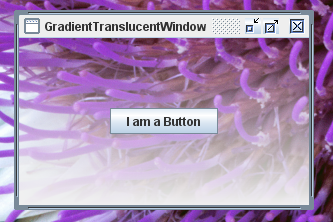

How to Create Translucent and Shaped Windows
- Supported Capabilities
- Determining a Platform's Capabilities
- How to Implement Uniform Translucency
- How to Implement Per-Pixel Translucency
- How to Implement a Shaped Window
- Java SE Release 6 Update 10 API
- For More Information
Supported Capabilities
This functionality, which is part of the public AWT package in the JDK 7 release, takes three forms, as follows:- You can create a window with uniform translucency, where each
pixel has the same translucency (or alpha) value.
The following screen capture shows a window with 45 percent translucency.

- You can create a window with per-pixel translucency,
where each pixel has its own alpha value. With this feature you can,
for example, create a window that fades away to nothing by defining a gradient
in the alpha values. The following screen capture shows a
window with gradient translucency from the top
(fully translucent) to the bottom (fully opaque).
 - You can create a window with any
Shapeobject that you can define. Shaped windows can be opaque, or they can use uniform, or per-pixel, translucency. The following screen capture shows an oval-shaped window with 30 percent translucency.
Determining a Platform's Capabilities
Not all platforms support all of these capabilities. AnUnsupportedOperationExceptionexception is thrown when code attempts to invoke thesetShapeorsetOpacitymethods on a platform that does not support these capabilities. Therefore, it is best practice to first check that the platform supports the capability that you want to implement. TheGraphicsDeviceclass provides theisWindowTranslucencySupported(GraphicsDevice.WindowTranslucency)method that you can use for this purpose. You pass one of three enum values, defined inGraphicsDevice.WindowTranslucency, to this method:TRANSLUCENT– The underlying platform supports windows with uniform translucency, where each pixel has the same alpha value.PERPIXEL_TRANSLUCENT– The underlying platform supports windows with per-pixel translucency. This capability is required to implement windows that fade away.PERPIXEL_TRANSPARENT– The underlying platform supports shaped windows.
GraphicsConfigurationclass also provides theisTranslucencyCapablemethod to determine ifPERPIXEL_TRANSLUCENTtranslucency is supported by the givenGraphicsConfigurationobject.The following code shows how to check for all three capabilities:
Version note: The translucent and shaped window API was first added to the Java SE 6 Update 10 release as a private API. This functionality was moved to the public AWT package in the JDK 7 release. This tutorial describes the API that is available in the JDK 7 release. See Java SE 6 Update 10 API for a mapping of the private API in the Java SE 6 Update 10 release to the public API in the JDK 7 release.import static java.awt.GraphicsDevice.WindowTranslucency.*; // Determine what the default GraphicsDevice can support. GraphicsEnvironment ge = GraphicsEnvironment.getLocalGraphicsEnvironment(); GraphicsDevice gd = ge.getDefaultScreenDevice(); boolean isUniformTranslucencySupported = gd.isWindowTranslucencySupported(TRANSLUCENT); boolean isPerPixelTranslucencySupported = gd.isWindowTranslucencySupported(PERPIXEL_TRANSLUCENT); boolean isShapedWindowSupported = gd.isWindowTranslucencySupported(PERPIXEL_TRANSPARENT);
Note: None of these capabilities work on windows in full-screen mode. Invoking any of the relevant methods while in full-screen mode causes anIllegalComponentStateExceptionexception to be thrown.How to Implement Uniform Translucency
You can create a window where each pixel has the same translucency by invoking thesetOpacity(float)method in theWindowclass. Thefloatargument passed to this method represents the translucency of the window and should be a value between 0 and 1, inclusive. The smaller the number, the more transparent the window. There is also a correspondinggetOpacitymethod.The following example creates a window that is 55 percent opaque (45 percent translucent). If the underlying platform does not support translucent windows, the example exits. The code relating to opacity is shown in bold.
import java.awt.*; import javax.swing.*; import static java.awt.GraphicsDevice.WindowTranslucency.*; public class TranslucentWindow extends JFrame { public TranslucentWindow() { super("TranslucentWindow"); setLayout(new GridBagLayout()); setSize(300,200); setLocationRelativeTo(null); setDefaultCloseOperation(JFrame.EXIT_ON_CLOSE); //Add a sample button. add(new JButton("I am a Button")); } public static void main(String[] args) { // Determine if the GraphicsDevice supports translucency. GraphicsEnvironment ge = GraphicsEnvironment.getLocalGraphicsEnvironment(); GraphicsDevice gd = ge.getDefaultScreenDevice(); //If translucent windows aren't supported, exit. if (!gd.isWindowTranslucencySupported(TRANSLUCENT)) { System.err.println( "Translucency is not supported"); System.exit(0); } // Create the GUI on the event-dispatching thread SwingUtilities.invokeLater(new Runnable() { @Override public void run() { TranslucentWindow tw = new TranslucentWindow(); // Set the window to 55% opaque (45% translucent). tw.setOpacity(0.55f); // Display the window. tw.setVisible(true); } }); } }Note that the button is also affected by the uniform translucency. Setting the opacity affects the whole window, including any components that the window contains.
How to Implement Per-Pixel Translucency
Creating a window that uses per-pixel translucency involves defining alpha values over the rectangular area that the window occupies. When a pixel's alpha value is zero, that pixel is fully transparent. When a pixel's alpha value is 255, that pixel is fully opaque. When a pixel's alpha value is 128, that pixel is 50 percent translucent, and so on. An easy way to create a smooth interpolation between alpha values is to use theGradientPaintclass. The included example uses this approach.Invoking
setBackground(new Color(0,0,0,0))on the window causes the software to use the alpha values to render per-pixel translucency. In fact, invokingsetBackground(new Color(0,0,0,alpha), wherealphais less than 255, installs per-pixel transparency. So, if you invokesetBackground(new Color(0,0,0,128))and do nothing else, the window is rendered with 50 percent translucency for each background pixel. However, if you are creating your own range of alpha values, you most likely will want an alpha value of 0.While not prohibited by the public API, you will generally want to enable per-pixel translucency on undecorated windows. In most cases, using per-pixel translucency on decorated windows does not make sense. Doing so can disable the decorations, or cause other platform-dependent side effects.
To determine if a window is using per-pixel translucency, you can use the
isOpaquemethod.An example follows. First, here are the steps required to implement the example:
- Invoke
setBackground(new Color(0,0,0,0))on the window. - Create a
JPanelinstance that overrides thepaintComponentmethod. - In the
paintComponentmethod, create aGradientPaintinstance. - In the example, the top of the rectangle
has an alpha value of 0 (the most transparent) and the bottom has an
alpha value of 255 (the most opaque). The
GradientPaintclass smoothly interpolates the alpha values from the top to the bottom of the rectangle. - Set the
GradientPaintinstance as the panel's paint method.
Here is the code for the
GradientWindowexample. If the underlying platform does not support per-pixel translucency, this example exits. The code specifically relating to creating the gradient window is shown in bold.import java.awt.*; import javax.swing.*; import static java.awt.GraphicsDevice.WindowTranslucency.*; public class GradientTranslucentWindow extends JFrame { public GradientTranslucentWindow() { super("GradientTranslucentWindow"); setBackground(new Color(0,0,0,0)); setSize(new Dimension(300,200)); setLocationRelativeTo(null); setDefaultCloseOperation(JFrame.EXIT_ON_CLOSE); JPanel panel = new JPanel() { @Override protected void paintComponent(Graphics g) { if (g instanceof Graphics2D) { final int R = 240; final int G = 240; final int B = 240; Paint p = new GradientPaint(0.0f, 0.0f, new Color(R, G, B, 0), 0.0f, getHeight(), new Color(R, G, B, 255), true); Graphics2D g2d = (Graphics2D)g; g2d.setPaint(p); g2d.fillRect(0, 0, getWidth(), getHeight()); } } }; setContentPane(panel); setLayout(new GridBagLayout()); add(new JButton("I am a Button")); } public static void main(String[] args) { // Determine what the GraphicsDevice can support. GraphicsEnvironment ge = GraphicsEnvironment.getLocalGraphicsEnvironment(); GraphicsDevice gd = ge.getDefaultScreenDevice(); boolean isPerPixelTranslucencySupported = gd.isWindowTranslucencySupported(PERPIXEL_TRANSLUCENT); //If translucent windows aren't supported, exit. if (!isPerPixelTranslucencySupported) { System.out.println( "Per-pixel translucency is not supported"); System.exit(0); } JFrame.setDefaultLookAndFeelDecorated(true); // Create the GUI on the event-dispatching thread SwingUtilities.invokeLater(new Runnable() { @Override public void run() { GradientTranslucentWindow gtw = new GradientTranslucentWindow(); // Display the window. gtw.setVisible(true); } }); } }Note that the button is not affected by the per-pixel translucency. Setting the per-pixel translucency affects the background pixels only. If you want a window that has a uniformly translucent effect on the background pixels only, you can invoke
setBackground(new Color(0,0,0,alpha))wherealphaspecifies your desired translucency.How to Implement a Shaped Window
You can create a shaped window by invoking thesetShape(Shape)method in theWindowclass. TheShapeargument that is passed to the method determines how the window is clipped. When a shape is set on a window, the window decorations are not re-formed to the new shape, so setting a shape works best on undecorated windows.The best practice for setting the window's shape is to invoke
setShapein thecomponentResizedmethod of the component event listener. This practice will ensure that the shape is correctly calculated for the actual size of the window. The following example uses this approach.The example creates an oval-shaped window with 70 percent opacity. If the underlying platform does not support shaped windows, the example exits. If the underlying platform does not support translucency, the example uses a standard opaque window. You could modify this example to create a shaped window that also uses per-pixel translucency.
The code relating to shaping the window is shown in bold.
import java.awt.*; import java.awt.event.*; import javax.swing.*; import java.awt.geom.Ellipse2D; import static java.awt.GraphicsDevice.WindowTranslucency.*; public class ShapedWindow extends JFrame { public ShapedWindow() { super("ShapedWindow"); setLayout(new GridBagLayout()); // It is best practice to set the window's shape in // the componentResized method. Then, if the window // changes size, the shape will be correctly recalculated. addComponentListener(new ComponentAdapter() { // Give the window an elliptical shape. // If the window is resized, the shape is recalculated here. @Override public void componentResized(ComponentEvent e) { setShape(new Ellipse2D.Double(0,0,getWidth(),getHeight())); } }); setUndecorated(true); setSize(300,200); setLocationRelativeTo(null); setDefaultCloseOperation(JFrame.EXIT_ON_CLOSE); add(new JButton("I am a Button")); } public static void main(String[] args) { // Determine what the GraphicsDevice can support. GraphicsEnvironment ge = GraphicsEnvironment.getLocalGraphicsEnvironment(); GraphicsDevice gd = ge.getDefaultScreenDevice(); final boolean isTranslucencySupported = gd.isWindowTranslucencySupported(TRANSLUCENT); //If shaped windows aren't supported, exit. if (!gd.isWindowTranslucencySupported(PERPIXEL_TRANSPARENT)) { System.err.println("Shaped windows are not supported"); System.exit(0); } //If translucent windows aren't supported, //create an opaque window. if (!isTranslucencySupported) { System.out.println( "Translucency is not supported, creating an opaque window"); } // Create the GUI on the event-dispatching thread SwingUtilities.invokeLater(new Runnable() { @Override public void run() { ShapedWindow sw = new ShapedWindow(); // Set the window to 70% translucency, if supported. if (isTranslucencySupported) { sw.setOpacity(0.7f); } // Display the window. sw.setVisible(true); } }); } }Java SE 6 Update 10 API
Changing the public API in an update release is not allowed, so when the translucent and shaped windows capability was added to the Java SE 6 Update 10 release, it was implemented in the privatecom.sun.awt.AWTUtilitiesclass. For the JDK 7 release, this functionality was moved to the public AWT package. The following table shows how the private methods map to the public methods.Method in Java SE 6 Update 10 JDK 7 Equivalent AWTUtilities.isTranslucencySupported(Translucency)GraphicsDevice.isWindowTranslucencySupported(WindowTranslucency)AWTUtilities.isTranslucencyCapable(GraphicsConfiguration)GraphicsConfiguration.isTranslucencyCapable()AWTUtilities.setWindowOpacity(Window, float)Window.setOpacity(float)AWTUtilities.setWindowShape(Window, Shape)Window.setShape(Shape)AWTUtilities.setWindowOpaque(boolean)Window.setBackground(Color)Passingnew Color(0,0,0,alpha)to this method, wherealphais less than 255, installs per-pixel translucency.For More Information
- The How to Create Translucent and Shaped Windows article describes the Java SE 6 Update 10 API.
- The Translucent and Shaped Swing Windows article describes the Java SE 6 Update 10 API.
- Romain Guy's Curious Creature blog entry shows a demo with an application of a translucent shaped window.